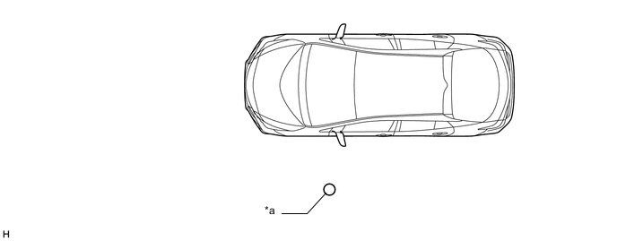
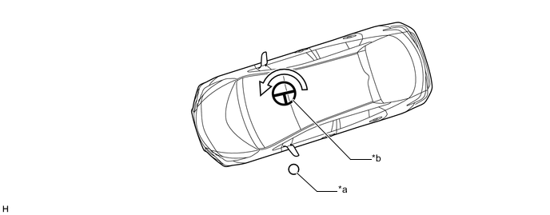
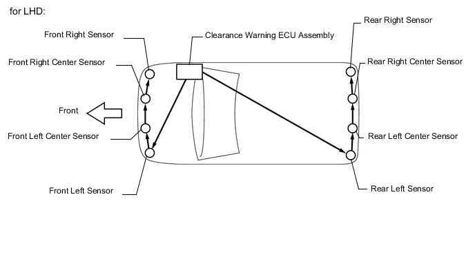
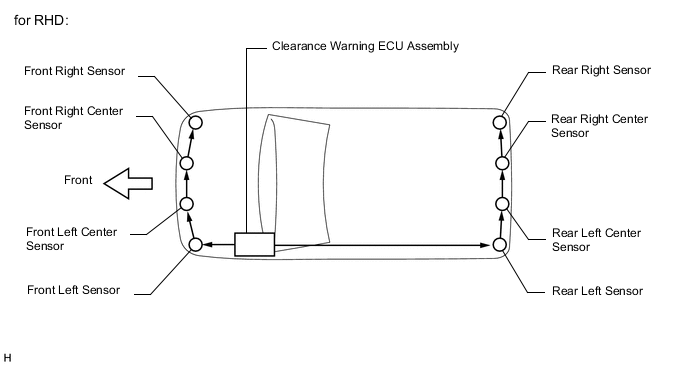
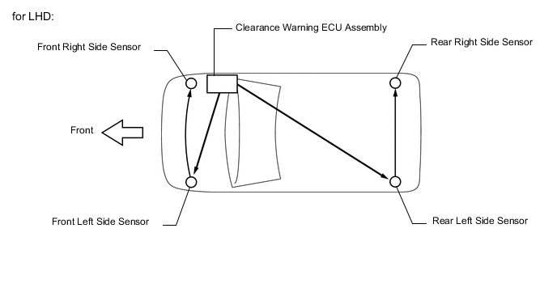
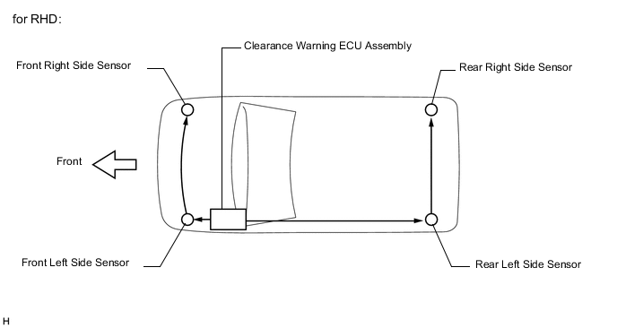

GENERAL
This system uses ultrasonic sensors to detect any obstacles at the corners and the rear of the vehicle. The system then informs the driver of the distance between the sensors and an obstacle as well as their positions by indicating them on the multi-information display (on the meter circuit plate), multi-display (on the navigation receiver assembly*1*2 or radio and display receiver assembly*1*3) and by sounding a buzzer.
*1: w/ Parking Assist Monitor System
*2: for Navigation Receiver Type
*3: for Radio and Display Type
FUNCTION OF COMPONENTS
| Component | Function |
|---|---|
|
Detects the distance between the vehicle and an obstacle |
|
Sounds to inform the driver according to the distance to an obstacle |
| Multi-information Display (on Meter Circuit Plate) |
|
| Clearance Sonar Indicator (on Meter Circuit Plate) | Illuminates to inform the driver while the TOYOTA parking assist-sensor system power is on (the power switch is on (IG) and the TOYOTA parking assist-sensor system is on) |
| Meter Circuit Plate |
|
| Steering Pad Switch Assembly - Multi-information Switch |
Enables, disables or cuts off the operation of the TOYOTA parking assist-sensor system by transmitting the switch operation signal to the meter circuit plate |
| Clearance Warning ECU Assembly |
|
| Main Body ECU (Multiplex Network Body ECU) | Transmits the destination information to the clearance warning ECU assembly |
| Hybrid Vehicle Control ECU | Transmits the shift position signal to the clearance warning ECU assembly |
|
Receives the video signals from the rear television camera assembly, and displays them on the display panel |
| Rear Television Camera Assembly*1 | Receives the ultrasonic sensor information via CAN communication and sends it to the navigation receiver assembly*2 or radio and display receiver assembly*3 through the video signal cable |
*1: w/ Parking Assist Monitor System
*2: for Navigation Receiver Type
*3: for Radio and Display Type
OPERATION EXPLANATION
The operating conditions of each ultrasonic sensor differ according to the installation position as shown in the table below.
| Installation Position | Operating Condition |
|---|---|
| Front Corner |
|
| Front Center |
|
| Front Side |
|
| Rear Corner |
|
| Rear Center | |
| Rear Side |
|
When the system operates, the clearance warning ECU assembly transmits ultrasonic waves from the ultrasonic sensors. If these waves encounter an obstacle within one or more of the sensors ranges, the waves are reflected back to the sensors, which transmit them to the clearance warning ECU assembly.
Based on this information, the clearance warning ECU assembly sends signals to the meter circuit plate, the No. 1 clearance warning buzzer and the No. 2 clearance warning buzzer. The approximate distance between the vehicle and the obstacle is then indicated, and the buzzer sounds.
Side sonar display and buzzer system description
When the ultrasonic sensors (side sonar) detect an obstacle, the distance between the obstacle and the vehicle is calculated and it is determined if the obstacle is in the path of the vehicle.

| *a | 60 mm (2.4 in.) diameter pole | - | - |
If the obstacle is determined to be in the path of the vehicle, notifications are displayed and the buzzer sounds.

| *a | 60 mm (2.4 in.) diameter pole | *b | Steering wheel turned 90°or more |
COMMUNICATION SIGNALS OF COMPONENTS
Tech Tips
Allocation refers to the process of the clearance warning ECU assembly setting aside IDs for the sensors.
The vehicle has the sensors arranged in 2 groups. There is a front series and a rear series. The sensors are connected in a "daisy chain".
Initialization mode (except Front Side Ultrasonic Sensor and Rear Side Ultrasonic Sensor):
An ID is allocated to each sensor and sensor diagnosis is performed.


When the initial check is operating (the power switch is on (IG) and the TOYOTA parking assist-sensor system is on), the clearance warning ECU assembly provides power to the first sensors in each series (front left sensor and rear left sensor).
After the power is supplied, the front left sensor and rear left sensor enter standby mode to receive an ID from the ECU. When a certain amount of time has elapsed, the ECU sends an ID allocation signal to these sensors.
The front left sensor and rear left sensors receive the ID allocation signal from the ECU and perform self-diagnosis. When the sensor self-diagnosis is complete, the ECU sends an ID allocation confirmation signal to the sensors.
After the ID allocation confirmation is performed, the ECU provides power to the second sensors in each series (front left center sensor and rear left center sensor) via the first sensors. In the same manner as the first sensors, the second sensors enter standby mode. When a certain amount of time has elapsed, the ECU sends an ID allocation signal to the second sensors.
The above operation will be repeated until an ID is allocated to the last sensor (front right sensor or rear right sensor). Initialization ends when ID allocation to all ultrasonic sensors is completed.
Initialization mode (for Front Side Ultrasonic Sensor and Rear Side Ultrasonic Sensor):
An ID is allocated to each sensor and sensor diagnosis is performed.


When the initial check is operating (the power switch is on (IG) and the TOYOTA parking assist-sensor system is on), the clearance warning ECU assembly provides power to the first sensors in each series (front left side sensor and rear left side sensor).
After the power is supplied, the front left side sensor and rear left side sensor enter standby mode to receive an ID from the ECU. When a certain amount of time has elapsed, the ECU sends an ID allocation signal to these sensors.
The front left side sensor and rear left side sensors receive the ID allocation signal from the ECU and perform self-diagnosis. When the sensor self-diagnosis is complete, the ECU sends an ID allocation confirmation signal to the sensors.
After the ID allocation confirmation is performed, the ECU provides power to the second sensors in each series (front right side sensor and rear right side sensor) via the first sensors. In the same manner as the first sensors, the second sensors enter standby mode. When a certain amount of time has elapsed, the ECU sends an ID allocation signal to the second sensors. Initialization ends when ID allocation to all ultrasonic sensors is complete.
Detection mode:
After initialization mode is completed, the system switches to detection mode. In detection mode, the clearance warning ECU assembly sends information request signals and sensor activation signals to the ultrasonic sensors and receives detection result signals from the sensors.
The ECU regularly sends ID signals, information request signals, and sensor activation signals to each ultrasonic sensor according to the communication schedule.
When a certain amount of time has elapsed (sensor detection operation is completed), the ECU sends an ID signal to the sensor to receive a detection result signal.
The ultrasonic sensor sends a detection result signal or detection information signal to the ECU.
The above operation is performed repeatedly for each ultrasonic sensor.